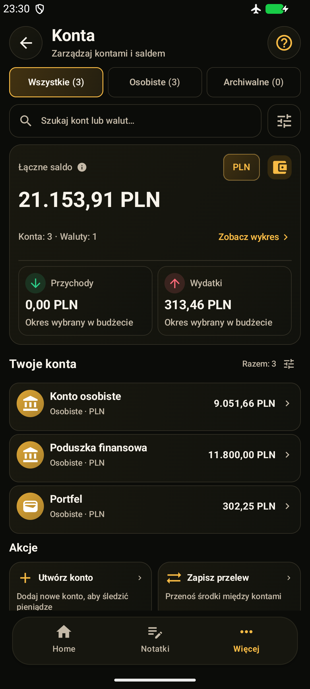

KOVA Offline Free V1 · Android
Finanse
w jednym miejscu.
Wydatki, budżety, cele i dochód z pracy — na Twoim telefonie. Przygotowujemy bezpłatną wersję offline, bez konta w chmurze, reklam i subskrypcji.
- Android 7.0+
- Lokalne finanse
- Bez konta online
Przed premierą · publiczne pobieranie jeszcze niedostępne.

Aplikacja
Zajrzyj do KOVA.
Jedna fikcyjna użytkowniczka, trzy konta i pół roku codziennych finansów. To nowe, nieprzerabiane zrzuty z działającej KOVA Offline V1 na emulatorze Androida. Pokazują prawdziwe funkcje z realistycznymi danymi demonstracyjnymi — bez prywatnych finansów. Interfejs na zdjęciach jest po polsku.
Dotknij ekranu, aby zobaczyć go w całości.Pierwsze wydanie
Bezpłatnie. Na telefon.
Lokalne konta, transakcje, budżety, płatności cykliczne, długi, cele, majątek netto, praca, raporty, kalendarz, notatki i OCR. Chmura, bankowe API, AI, Wear OS, Rodzina online i notowania na żywo nie są częścią V1. Końcowa kwalifikacja i dokumenty pozostają w przygotowaniu.
Prywatność
Jak KOVA chroni dane.
Główna baza finansowa korzysta z SQLCipher. Nie ma automatycznej synchronizacji z chmurą. Zadbaj o blokadę telefonu i regularny eksport — szyfrowanie nie zastępuje kopii ani ostrożności.
Czytaj o bezpieczeństwieWarto wiedzieć
Kilka prostych odpowiedzi.
Zanim zaczniesz korzystać z KOVA.
Czy KOVA będzie bezpłatna?
Tak. Offline Free V1 nie zawiera reklam, zakupów, subskrypcji ani paywalli. Korzystanie z lokalnych funkcji nie wymaga rejestracji ani płatnej usługi backendowej.
Czy mogę już pobrać KOVA?
Publiczne pobieranie nie jest jeszcze dostępne. Sprawdzony link do sklepu pojawi się na stronie statusu projektu po przygotowaniu wydania. Nie podajemy daty, dopóki nie będzie potwierdzona.
Czy aplikacja działa bez internetu?
Tak. V1 jest przygotowywana jako aplikacja offline z lokalnym profilem. Nie udostępnia logowania Google, synchronizacji ani usług AI. Wybrany dostawca plików, przeglądarka lub poczta mogą korzystać z internetu niezależnie od KOVA.
Czy muszę podłączać konto bankowe?
Nie. KOVA nie wymaga haseł do banku. Konta w aplikacji służą do porządkowania zapisywanych przez Ciebie finansów.
Czy prognozy i kwoty netto są gwarantowane?
Nie. To szacunki oparte na zapisanych danych i konfiguracji. Mogą różnić się od rzeczywistych wypłat i nie zastępują dokumentów pracodawcy ani indywidualnej porady.
Czy ta strona ma dostęp do moich finansów?
Nie. Strona przedstawia projekt i nie łączy się z bazą finansową w telefonie. Opcjonalna analityka strony zależy od Twojej zgody.
Jak zabezpieczyć dane i zmienić telefon?
Utwórz ręczny eksport chroniony hasłem i przechowuj go bezpiecznie poza telefonem. Import wymaga potwierdzenia i zastępuje obsługiwany zakres wybranego profilu. To częściowa kopia, nie obraz całej aplikacji: osadzone obrazy notatek są uwzględnione, ale zewnętrzne załączniki i zdjęcia paragonów trzeba zabezpieczyć osobno. Nie ma automatycznego odzyskiwania z chmury ani hasła przez wydawcę.
Czy skanowanie paragonów działa offline?
OCR używa modelu dołączonego do aplikacji. Możesz zrobić zdjęcie lub wybrać je z galerii przez selektor Androida. Rozpoznawanie może się pomylić — przed zapisem sprawdź kwotę, walutę i datę. Odmowa dostępu do aparatu nie blokuje wyboru pliku.
Na jakie urządzenia i dla kogo powstaje KOVA?
Na telefony z Androidem 7.0 lub nowszym, z interfejsem PL/EN/RU. Testy kompatybilności nadal trwają. Planowana grupa to osoby 13+, ale nie jest to zatwierdzona klasyfikacja Google Play ani potwierdzenie dostępności we wszystkich krajach. Wydanie na zegarki i iOS nie jest oferowane.
Dokumenty
Zasady KOVA.
Aktualne kopie dokumentów aplikacji. Polityka prywatności i warunki są projektami wymagającymi zatwierdzenia przed publikacją.